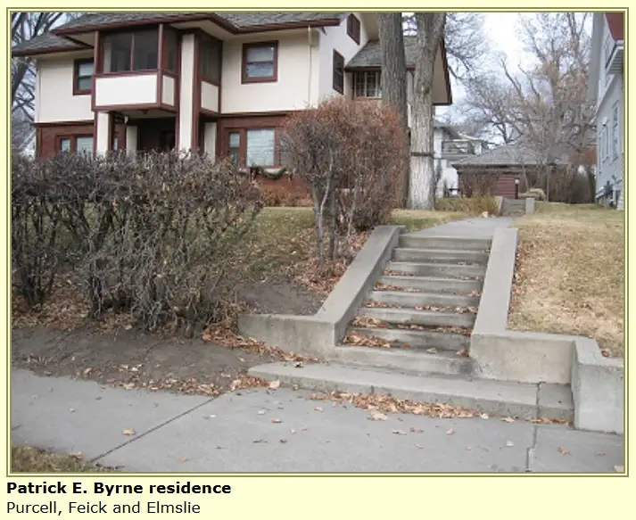
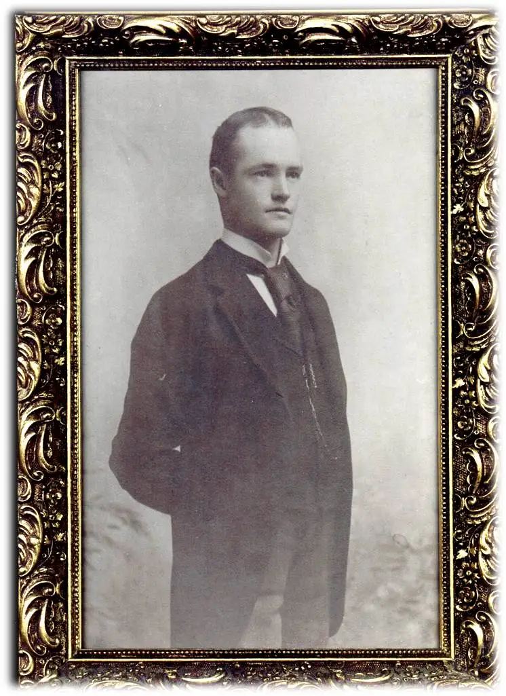

Just the mere sight of it, from a photograph found on a website, and I am right there.

I’d been pulling together photos for a presentation for a teachers’ conference in Bismarck, to share a bit of my connection with the state of North Dakota, and I knew there were some of the old house floating about in cyberspace somewhere. It didn’t take long to land upon the image once again.
{kind=link}
It’s our family home, the home where my Grandpa Joe was born, the home famed architect William Purcell designed upon coming to the area in the early 1900s after agreeing to fashion a few houses in the Dakota Territory. My Great-Grandfather Patrick Byrne turned out to be one of the lucky ones who would be on the receiving end of Purcell’s work.

{kind=link}
I just assumed it would always be part of us, but when my grandfather died when I was nine, the big house at 120 Avenue A. West in Bismarck became too much for my grandma to handle on her own. And by my fifth grade year, she’d moved on to another home, more secure, less work, but also, with fewer memories.
{kind=link}
For her, this was the best thing, I’m sure. She was young when she first stepped foot in that big house. This week, she’ll be 101.
{kind=link}
But there’s no doubt that losing the house signified yet another loss to our family.
It’s on the historic register now, and, in some sense, has become somewhat famous. People who study this particular architect and style are in awe of the nooks and crannies. It’s interesting to me to read some of these pontifications, as they point out the finer details; things that I didn’t notice as a little girl traipsing through the yard to go sit under the big evergreen tree my grandfather had planted as a young boy, bathing in its shade and protection, listening to unsuspecting passersby…
{kind=link}
This admirer discovered, through photos, “the delicate tracery” work found in “a triangular decorated sawed wood panel tucked up beneath the eave,” and expressed a desire to get to Bismarck some day to see the home for himself. (More here.)
How could I have possibly known that this house that I loved because of the love within would hold such interest to those far and wide? Looking back, I see how unique some of the details were. I wish I had wider shots of the interior. A few in my possession leave traces of what was, like this one, taken on the occasion of my very first Christmas, showing just a corner at my inaugural visit to the home.
{kind=link}
When someone snapped this image of my sister and me dressed up for the Bismarck Centennial parade in 1972, we were standing before the same fireplace from whence Santa emerged every December 24.
{kind=link}
The house is no longer ours. But I remember it all so clearly in my mind.
Finding these photos and others, including a blueprint that showed the house’s design had the focal point of a grand piano (my great-grandma had been on her way to becoming a concert pianist at one time), brings an excitement to my heart, like when finding a photo of a deceased relative.
{kind=link}
Indeed, when I drive past this house, as I often try to do when I’m in town, it’s a little like visiting a cemetery to pay respects to a loved one. Even so, like those cemetery visits, there’s the acknowledgement that although the shell is still there, the soul of the person — of the home in this case — is elsewhere; somewhere inside me, in a safe and lovely place that, while not always immediate, can still be accessed and treasured.
By the time this posts, I’ll be in Bismarck, and, you can bet, taking a little drive by 120 Ave. A. West.
Q4U: Have you ever sensed the soul of a home where you once resided?